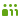

✈
Offline-Modus
🔔 Test Notif
Linie
Ziel
Datum
Wiederholung konfigurieren →
Gültig bis
Kein Enddatum
Symbol
Zeitraum in Nachricht
Wiederholung
Zur Vorlage →
Planmäßige Abfahrt - Ankunft
Tatsächliche Abfahrt - Ankunft
-5
+5
+10
+30
Verspätungsgrund
Dauer
Zwischenhalte
Projekt
Zum Projekt →
Speichern
Durchstreichen
Löschen
✕ Zug fällt aus
⚠︎ Konflikt
Lösen
S1
Unbenanntes Projekt
✕
Fälligkeit
Kein Fälligkeitsdatum
Ansicht
Aufgabe
To-Do Liste
Gep.
Akt.
Aufgabe
Datum
To-Do
Projekte
Sortieren nach:
Erstellungsdatum
Name
Linie
Fälligkeit
Aufgabenanzahl
+ Neues Projekt
Vorlagen
+ Neue Vorlage
✕
S1
Unbenanntes Projekt
Open-Ended
0 / 0 Aufgaben abgeschlossen
Keine Projekte vorhanden. Erstellen Sie ein neues Projekt.

—
✎
♥
—
✎
Energieverlauf
♥
Lovemeter
Suche
Abfahrtstafel
Einstellungen
--:--
✕
Rate:
E/min
Bearbeiten
Entfernen
Station
Energieverlauf
♥
Lovemeter
★
Rezension
Suche
Abfahrtstafel
Einstellungen
Neu
Liste
Belegung
Meldungen
Notizen
Projekte
Vorlagen
Logs
Rezensionen
Papierkorb
Lovemeter
Heute
#DranDenken
✕
Notizen
+
✕
Wie war dein Tag?
✕
★
★
★
★
★
Speichern
WHAT HAPPENED???
✕
Or add new
When
Did yall make eye-contact!!?
YESSSSSSS
OMG YASSSS how long?!??
ms
Override absolute M
Modus
✕
Eintrag hinzufuegen
Listenansicht
Belegungsplan
Ankuendigungen
DB API
Log Viewer
Projekte
Vorlagen
Rezensionen
Papierkorb
Bahnhof auswählen
Leer lassen für den aktuellen Uni-Stundenplan.
Änderung vorgenommen
Rückgängig
00:00
Abfahrt
Departure
Abfahrt
Zug / Train
Zeit / Time
Über / Via
Ziel / Destination
Gleis / Track